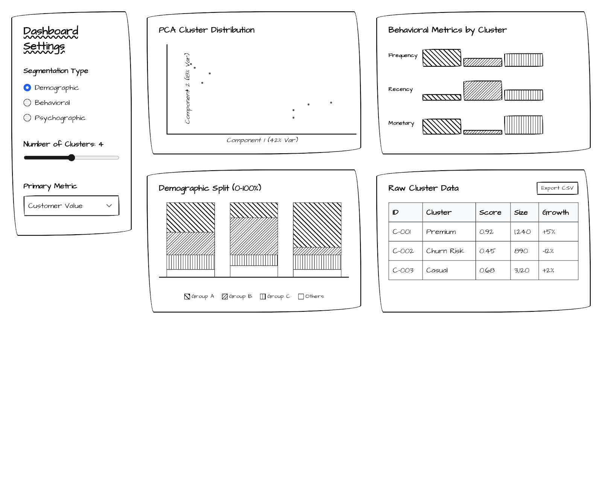
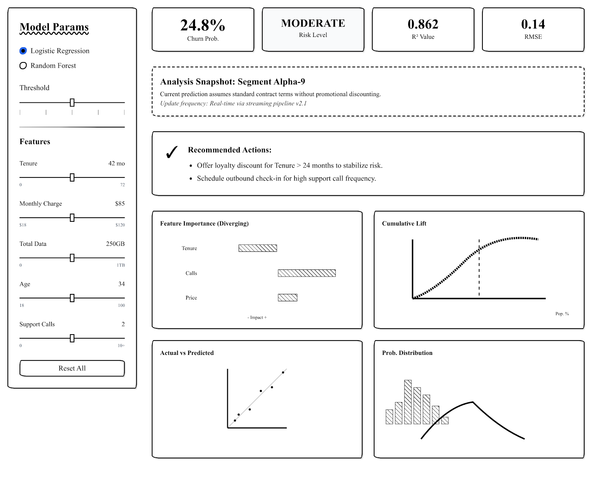

User Guide - COFINFAD Analytics
How to Use the
COFINFAD Shiny App如何使用
COFINFAD Shiny 应用
A step-by-step walkthrough of all five analytical modules — no coding required.
五大分析模块逐步操作指南，无需编写任何代码。
rocket_launch Launch Shiny App启动 Shiny 应用Modules at a Glance模块概览
Getting Started快速入门
The COFINFAD Shiny App is a fully interactive analytics dashboard — no installation or coding needed. Simply open the app in your browser and navigate between the five analytical tabs using the top navigation bar.
COFINFAD Shiny 应用是一个完全交互式的分析仪表板，无需安装或编写代码。只需在浏览器中打开应用，通过顶部导航栏在五个分析标签页之间切换即可。
Open the App打开应用
Click the Shiny App button in the navbar above, or visit the app URL directly in a new tab.
点击上方导航栏中的 Shiny 应用 按钮，或直接在新标签页中访问应用链接。
Choose a Module选择模块
Use the top navbar tabs — About, Exploratory Overview, Confirmatory Analysis, Customer Segmentation, Model Calibration, What-If Simulator — to navigate between modules.
使用顶部导航栏标签页——关于、探索性概览、验证性分析、客户细分、模型校准、假设模拟器——在模块之间切换。
Adjust & Explore调整与探索
Each module has a sidebar panel with filters, dropdowns, and sliders. Change the controls and the charts update instantly.
每个模块都有一个带有筛选器、下拉菜单和滑块的侧边栏面板，更改控件后图表将即时更新。
Tip: All charts are built with Plotly — hover over any data point to see exact values. Click legend items to show/hide series. Use the toolbar icons (top-right of each chart) to zoom, pan, or download.
提示：所有图表均使用 Plotly 构建——将鼠标悬停在数据点上可查看精确数值。点击图例项目可显示/隐藏系列。使用每个图表右上角的工具栏图标进行缩放、平移或下载。
Exploratory Overview探索性概览
Get a high-level picture of transaction volumes, geographic distribution, and customer demographics. Four KPI cards at the top summarise the key numbers at a glance.
从宏观角度了解交易量、地理分布和客户人口结构。顶部四个 KPI 卡片一览关键数据。

tuneSidebar Controls侧边栏控件
-
date_range
Date Range日期范围
Drag or type to filter the time-series chart to a specific period within the 12-month observation window.
拖动或输入以将时间序列图表筛选到 12 个月观察窗口内的特定时间段。
-
checklist
Transaction Types交易类型
Check or uncheck Transfer, Withdrawal, Payment, Deposit to show or hide individual series on the time-series chart.
勾选或取消勾选转账、取款、付款、存款，以在时间序列图表上显示或隐藏各系列。
-
map
Map Metric地图指标
Select what the Colombian department map/bar chart should display: Customer Count, Avg Churn Probability, Avg Income, Avg CLV, or Avg Satisfaction.
选择哥伦比亚省份地图/条形图显示的指标：客户数量、平均流失概率、平均收入、平均 CLV 或平均满意度。
-
group
Grouping Variable分组变量
Choose which demographic to break down the Customer Distribution bar chart by: income bracket, segment, CLV tier, gender, age group, acquisition channel, or feedback sentiment.
选择按哪个人口统计维度分解客户分布条形图：收入档次、细分群体、CLV 层级、性别、年龄组、获客渠道或反馈情感。
bar_chartCharts & What They Show图表及其含义
-
Monthly Transaction Volume by Type按类型的月度交易量
Line chart showing COP billions per month, colour-coded by transaction type. Hover for exact values.
折线图显示每月的十亿哥伦比亚比索，按交易类型着色。悬停可查看精确数值。
-
Colombian Department Overview哥伦比亚省份概览
Interactive choropleth map (or horizontal bar chart) showing the selected metric by Colombian department. Hover over a department to see its value.
交互式分级地图（或水平条形图），按哥伦比亚省份显示所选指标。悬停在省份上可查看其数值。
-
Customer Distribution客户分布
Horizontal bar chart ranking groups by customer count. Changes dynamically based on the selected Grouping Variable.
按客户数量排序的水平条形图，根据所选分组变量动态变化。
-
Segment Composition by Income Bracket按收入档次的细分群体构成
Stacked 100% bar chart showing the proportion of customer segments (inactive, occasional, regular, power) within each income group.
堆叠 100% 条形图显示每个收入组内客户细分群体（非活跃、偶发、常规、高活跃）的比例。
Tip: Click Reset Filters in the sidebar to restore all defaults at once. The KPI cards (Total Customers, Transaction Volume, Avg Churn Rate, Avg Satisfaction) at the top of the page always reflect the currently filtered data.
提示：点击侧边栏中的重置筛选器可一次性恢复所有默认设置。页面顶部的 KPI 卡片（总客户数、交易量、平均流失率、平均满意度）始终反映当前筛选后的数据。
Confirmatory Analysis验证性分析
Go beyond patterns and test statistical hypotheses. This tab uses ggstatsplot to run formal significance tests and display a publication-ready correlation matrix — all driven by the sidebar controls.
超越数据规律，进行统计假设检验。本标签页使用 ggstatsplot 运行正式显著性检验并显示可发布的相关矩阵——所有功能均由侧边栏控件驱动。
tuneSidebar Controls侧边栏控件
-
group
Grouping Variable分组变量
The categorical variable used to split customers into groups for the statistical test (e.g., income bracket, gender, segment).
用于将客户划分为群组进行统计检验的分类变量（例如收入档次、性别、细分群体）。
-
functions
Test Variable检验变量
The numeric variable being compared across groups (e.g., avg_tx_value, churn_probability, satisfaction_score).
跨群组进行比较的数值变量（例如平均交易价值、流失概率、满意度评分）。
-
schema
Test Approach检验方法
Choose from Parametric (F-test/t-test), Non-parametric (Kruskal-Wallis/Mann-Whitney), Robust, or Bayesian methods. Each changes the statistics shown in the plot subtitle.
从参数检验（F 检验/t 检验）、非参数检验（Kruskal-Wallis/Mann-Whitney）、稳健检验或贝叶斯方法中选择。每种方法都会改变图表副标题中显示的统计数据。
-
compare
Comparison Type比较类型
Select Between Groups (ANOVA) to compare all groups simultaneously, or Two-Group (T-test) to pick exactly two groups from the dropdowns that appear below.
选择组间比较（ANOVA）同时比较所有组，或双组比较（T 检验）从下方出现的下拉菜单中选择恰好两个组。
-
grid_view
Correlation Method相关系数方法
Controls the correlation matrix on the right. Parametric = Pearson; Non-parametric = Spearman; Robust = percentage bend; Bayesian = posterior correlation.
控制右侧的相关矩阵。参数=Pearson；非参数=Spearman；稳健=百分位弯曲；贝叶斯=后验相关。
bar_chartReading the Charts解读图表
-
Hypothesis Test Plot (left)假设检验图（左）
A violin + box plot for each group. The subtitle shows the test statistic, degrees of freedom, p-value, and effect size. Pairwise comparisons are annotated with significance brackets.
每个组的小提琴图 + 箱线图。副标题显示检验统计量、自由度、p 值和效应量。成对比较用显著性括号标注。
-
Correlation Matrix (right)相关矩阵（右）
A heatmap of pairwise correlations between key numeric variables, reordered by hierarchical clustering so that similar variables appear together. Asterisks (*) indicate statistical significance levels.
关键数值变量之间成对相关系数的热力图，按层次聚类重新排序使相似变量相邻显示。星号（*）表示统计显著性水平。
For large groups the app automatically samples up to 5,000 rows for performance, so results are still statistically representative.
对于大型数据组，应用会自动抽取最多 5,000 行以保证性能，结果仍具有统计代表性。
Customer Segmentation客户细分
Segment 48,723 customers into distinct behavioral clusters using three different algorithms. Pre-computed results load instantly; for custom feature sets, click Run Clustering to recompute.
使用三种不同算法将 48,723 名客户分组为不同的行为聚类。预计算结果即时加载；对于自定义特征集，点击运行聚类重新计算。

tuneSidebar Controls侧边栏控件
-
category
Feature Preset特征预设
RFM Features uses Recency, Frequency, Monetary value. Full Behavioral adds tenure, credit, products. Engagement focuses on satisfaction and activity. Custom lets you hand-pick from 10 available features.
RFM 特征使用近度、频率、货币价值。完整行为增加了任期、信用、产品。参与度侧重满意度和活跃度。自定义允许从 10 个可用特征中手动选择。
-
123
Number of Clusters (k)聚类数量 (k)
Slide from 2 to 8. Check the Elbow and Silhouette diagnostic charts to choose the optimal k: look for the elbow bend and the highest silhouette score.
从 2 滑动到 8。查看肘部和轮廓系数诊断图选择最优 k：寻找肘部拐点和最高轮廓系数值。
-
account_tree
Algorithm算法
K-Means minimises within-cluster variance (fastest). Hierarchical (Ward) builds a tree of merges — see the Dendrogram tab. PAM is more robust to outliers as it uses real data points as cluster centres.
K-Means 最小化簇内方差（最快）。层次聚类（Ward）构建合并树——查看树状图标签页。PAM 使用真实数据点作为聚类中心，对离群值更稳健。
-
palette
Color Points By着色依据
Overlay a secondary dimension onto the PCA scatter — colour by cluster assignment, income bracket, customer segment, CLV tier, or churn risk to spot cross-cutting patterns.
在 PCA 散点图上叠加次要维度——按聚类分配、收入档次、客户细分、CLV 层级或流失风险着色，以发现交叉规律。
bar_chartCharts & Tabs图表与标签页
-
PCA Cluster VisualizationPCA 聚类可视化
2D scatter plot of the first two principal components. Each point is a customer; colours indicate cluster membership.
前两个主成分的 2D 散点图。每个点代表一位客户；颜色表示聚类归属。
-
Elbow / Silhouette Diagnostics肘部/轮廓系数诊断
Use the inner tabs to switch between the elbow curve (total within-cluster sum of squares vs. k) and the silhouette plot (average silhouette width per cluster).
使用内部标签页在肘部曲线（簇内平方和总量 vs. k）和轮廓图（每个聚类的平均轮廓宽度）之间切换。
-
Feature Heatmap特征热力图
Normalised cluster centroids as a heatmap — rows are features, columns are clusters. Orange = high, purple = low.
归一化聚类质心的热力图——行为特征，列为聚类。橙色=高，紫色=低。
-
Parallel Coordinates / Dendrogram / Income Dist.平行坐标/树状图/收入分布
Three inner tabs: parallel coordinate lines per cluster (feature profiles), the Ward linkage dendrogram, and income bracket breakdown per cluster.
三个内部标签页：每个聚类的平行坐标线（特征概况）、Ward 连接树状图和每个聚类的收入档次分布。
Click Export Centroids CSV at the bottom of the sidebar to download the cluster centroid table for further analysis.
点击侧边栏底部的导出质心 CSV，下载聚类质心表格以进行进一步分析。
Model Calibration模型校准
Inspect the performance of the regularised regression model used to predict churn probability. Explore how varying the regularisation strength (lambda) affects which features survive and how accurately the model fits.
检查用于预测流失概率的正则化回归模型的性能。探索改变正则化强度（lambda）如何影响哪些特征被保留以及模型的拟合精度。

tuneSidebar Controls侧边栏控件
-
schema
Model Type模型类型
Lasso (L1) shrinks some coefficients exactly to zero, performing implicit feature selection. Ridge (L2) shrinks all coefficients but keeps all features active.
Lasso (L1) 将某些系数精确收缩为零，执行隐式特征选择。Ridge (L2) 收缩所有系数但保留所有特征。
-
linear_scale
Lambda Index (λ)Lambda 索引 (λ)
Drag the slider (1–100) to explore different levels of regularisation. The app defaults to the optimal λ (λ.min from cross-validation). Moving right increases regularisation (simpler model, potentially higher bias). Moving left decreases it (more complex model, potentially overfitting).
拖动滑块（1–100）探索不同的正则化水平。应用默认使用最优 λ（交叉验证中的 λ.min）。向右移动增加正则化（更简单的模型，可能偏差更高）；向左移动减小正则化（更复杂的模型，可能过拟合）。
bar_chartCharts & KPIs图表与 KPI
-
KPI Cards — Model R², RMSE, Active Features, Churn ProbabilityKPI 卡片 — 模型 R²、RMSE、活跃特征数、流失概率
Four headline metrics for the currently selected λ. Active Features shows how many variables the model retains at this regularisation level.
当前选定 λ 的四个关键指标。活跃特征数显示模型在此正则化水平下保留的变量数量。
-
Top Churn Predictors (Variable Importance)主要流失预测因子（变量重要性）
Horizontal bar chart of the absolute regression coefficients at the selected λ. Longer bars = stronger predictors. Features shrunk to zero by Lasso disappear from this chart.
所选 λ 下绝对回归系数的水平条形图。条形越长=预测能力越强。被 Lasso 收缩为零的特征从此图中消失。
-
Cross-Validation Performance (λ vs MSE)交叉验证性能（λ vs MSE）
The CV error curve across all λ values with error bars. The two dashed lines mark λ.min (lowest error) and λ.1se (most regularised model within one standard error of the minimum).
所有 λ 值的交叉验证误差曲线，带误差棒。两条虚线标记 λ.min（最低误差）和 λ.1se（最小值一个标准误差内正则化最强的模型）。
-
Predicted vs Actual & Residual Distribution预测值 vs 实际值 & 残差分布
The scatter should hug the 45° diagonal for a well-calibrated model. The residual histogram should be centred near zero.
对于校准良好的模型，散点图应紧贴 45° 对角线。残差直方图应以零为中心。
What-If Simulator假设模拟器
Construct a hypothetical customer profile by adjusting sliders and instantly see how their predicted churn probability changes. Use the Prediction Breakdown and Sensitivity Analysis charts to understand why the model scores the customer this way.
通过调整滑块构建假设客户画像，即时查看其预测流失概率如何变化。使用预测分解和敏感性分析图表理解模型为何给出此评分。
tuneCustomer Profile Sliders客户画像滑块
Age年龄
29–60 years29–60 岁
Transaction Count交易次数
1–200 per period每期 1–200 笔
Avg Tx Value平均交易价值
100K–20M COP10 万–2000 万哥伦比亚比索
Satisfaction满意度
1–10 score1–10 分
NPS Score净推荐值
-100 to +100-100 至 +100
Credit Utilization信用利用率
0%–100%0%–100%
Tenure (months)任期（月）
1–24 months1–24 个月
Active Products活跃产品数
0–10 products0–10 个产品
Support Tickets支持工单数
0–20 tickets0–20 个工单
Spending Volatility消费波动性
0–10M COP σ0–1000 万哥伦比亚比索 σ
Household Size家庭规模
1–10 members1–10 人
Click Reset to Defaults to restore all sliders to the dataset average profile.
点击重置为默认值将所有滑块恢复为数据集平均画像。
bar_chartReading the Output解读输出
-
KPI Cards — Churn Probability & Risk LevelKPI 卡片 — 流失概率 & 风险等级
The Churn Probability card updates in real time as you move sliders. Risk Level is classified as LOW (below Q25), MEDIUM (Q25–Q75), or HIGH (above Q75) based on the dataset's distribution.
流失概率卡片随滑块移动实时更新。风险等级根据数据集分布分为低风险（低于 Q25）、中等风险（Q25–Q75）或高风险（高于 Q75）。
-
Recommendations Panel建议面板
Colour-coded action boxes appear below the KPI row: green = retention-boosting factors already in good shape, amber/red = actionable areas where improvement would lower churn risk.
彩色行动框出现在 KPI 行下方：绿色=已处于良好状态的留存促进因素，琥珀色/红色=改善后可降低流失风险的可操作领域。
-
Prediction Breakdown (Waterfall Chart)预测分解（瀑布图）
Each bar shows how much a feature pushes the predicted churn score up (red) or down (green) from the model baseline. The final bar is the total predicted probability.
每个柱条显示某特征将预测流失评分从模型基准推高（红色）或降低（绿色）的幅度。最终柱条为总预测概率。
-
Sensitivity Analysis (Tornado Chart)敏感性分析（龙卷风图）
Each feature is nudged ±10% from its current value; the resulting change in churn probability is shown as a horizontal bar. The widest bars = the levers with the most impact for this customer profile.
每个特征从其当前值±10% 变动；由此产生的流失概率变化显示为水平条形。最宽的条形=对当前客户画像影响最大的杠杆。
Frequently Asked Questions常见问题
The app is slow to load. What should I do?应用加载缓慢，该怎么办？
The app is hosted on shinyapps.io and may take 15–30 seconds to "wake up" if it has been idle. Wait a moment and then reload. Once warm, all pre-computed modules (EDA, CDA, preset clustering, model calibration) respond instantly.
应用托管在 shinyapps.io 上，如果长时间闲置可能需要 15–30 秒"唤醒"。稍等片刻后重新加载。一旦预热，所有预计算模块（EDA、CDA、预设聚类、模型校准）均可即时响应。
Why does Custom clustering take longer?为什么自定义聚类需要更长时间？
The four preset feature combinations (RFM, Full Behavioral, Engagement) are pre-computed and cached. Custom clustering runs live on 48,723 rows, which may take 5–15 seconds depending on server load and the number of clusters chosen.
四种预设特征组合（RFM、完整行为、参与度）均已预计算并缓存。自定义聚类对 48,723 行数据实时运行，根据服务器负载和所选聚类数，可能需要 5–15 秒。
How are churn probabilities calculated?流失概率是如何计算的？
A regularised linear regression (Lasso or Ridge via glmnet) is fitted on the full customer dataset. The What-If Simulator constructs a synthetic customer row from your slider inputs and passes it through the trained model to generate a real-time prediction.
在完整客户数据集上拟合正则化线性回归（通过 glmnet 的 Lasso 或 Ridge）。假设模拟器从滑块输入构建合成客户行，并通过训练好的模型生成实时预测。
Can I download the data or charts?能否下载数据或图表？
In the Segmentation tab, click Export Centroids CSV to download the cluster centroid table. For any Plotly chart, use the camera icon in the chart toolbar to save a PNG snapshot.
在细分标签页中，点击导出质心 CSV下载聚类质心表格。对于任何 Plotly 图表，使用图表工具栏中的相机图标保存 PNG 快照。
Ready to Explore?准备好开始探索了吗？
Launch the COFINFAD Shiny App and start uncovering insights from Colombia's fintech data — no coding required.
启动 COFINFAD Shiny 应用，开始挖掘哥伦比亚金融科技数据中的洞察——无需编写任何代码。